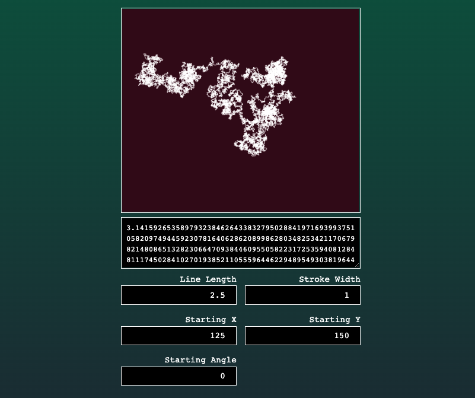
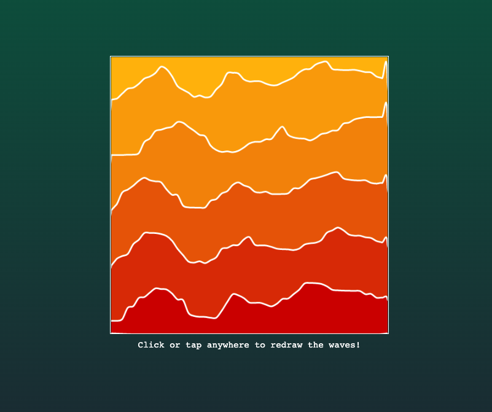
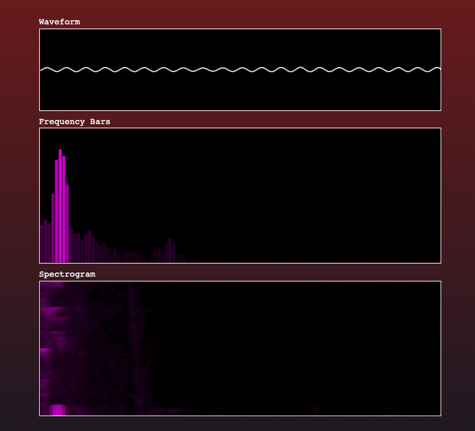

Who·Am·I
I am a
Data Engineer
helping build the future of finance at Gemini. Previously, I worked at Georgetown University's Massive Data Institute building data warehousing and processing solutions to help social scientists and researchers more easily leverage large-scale organic data in their research.
Technical Interests
- Data Pipeline Engineering
- Distributed Systems
- Embedded Systems
- Programming Languages
- Developer Tooling
Air Quality
I am a founding member and technical adviser to Globally Unified Air Quality, a startup aimed at providing low-cost solutions for measuring and analysing air-quality conditions around the world.
Consulting
I worked as a technical consultant for financial institutions and government agencies in the Washington, D.C. area, providing guidance on identity and access management, and big data solutions.
Latest Blog Posts
More Posts...
Experiments
Sequence Plotter
Plot the fist 10,000 digits of Pi, or any sequence of digits, in 2-dimensional space

Noise Mountains
Visualize a gradient of colored waves generated with Perlin noise

Microphone Audio Visuals
Visualize the audio from your microphone as a waveform, frequency bars, and a spectrogram
